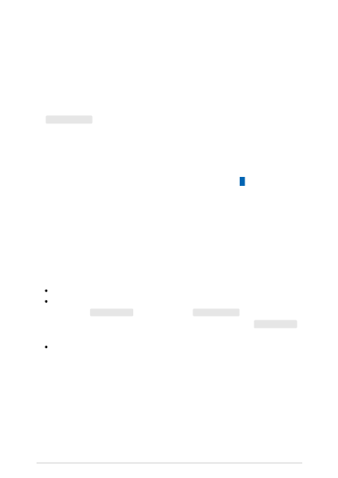

Content filtering
Article • 04/14/2023
Azure OpenAI Service includes a content management system that works alongside core
models to filter content. This system works by running both the input prompt and
generated content through an ensemble of classification models aimed at detecting
misuse. If the system identifies harmful content, you'll receive either an error on the API
call if the prompt was deemed inappropriate or the finish_reason on the response will
be content_filter to signify that some of the generation was filtered. You can generate
content with the completions API using many different configurations that will alter the
filtering behavior you should expect. The following section aims to enumerate all of
these scenarios for you to appropriately design your solution.
To ensure you have properly mitigated risks in your application, you should evaluate all
potential harms carefully, follow guidance in the Transparency Note and add scenario-
specific mitigation as needed.
When building your application, you'll want to account for scenarios where the content
returned by the Completions API is filtered and content may not be complete. How you
act on this information will be application specific. The behavior can be summarized in
the following key points:
Prompts that are deemed inappropriate will return an HTTP 400 error
Non-streaming completions calls won't return any content when the content is
filtered. The finish_reason value will be set to content_filter. In rare cases with
long responses, a partial result can be returned. In these cases, the finish_reason
will be updated.
For streaming completions calls, segments will be returned back to the user as
they're completed. The service will continue streaming until either reaching a stop
token, length or harmful content is detected.
The table below outlines the various ways content filtering can appear:
Scenario details
Scenario: You send a non-streaming completions call
asking for multiple generations with no inappropriate
content